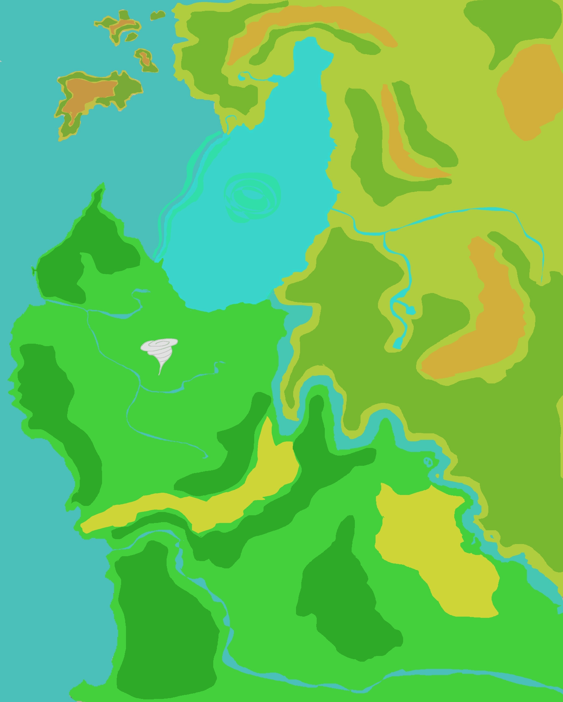
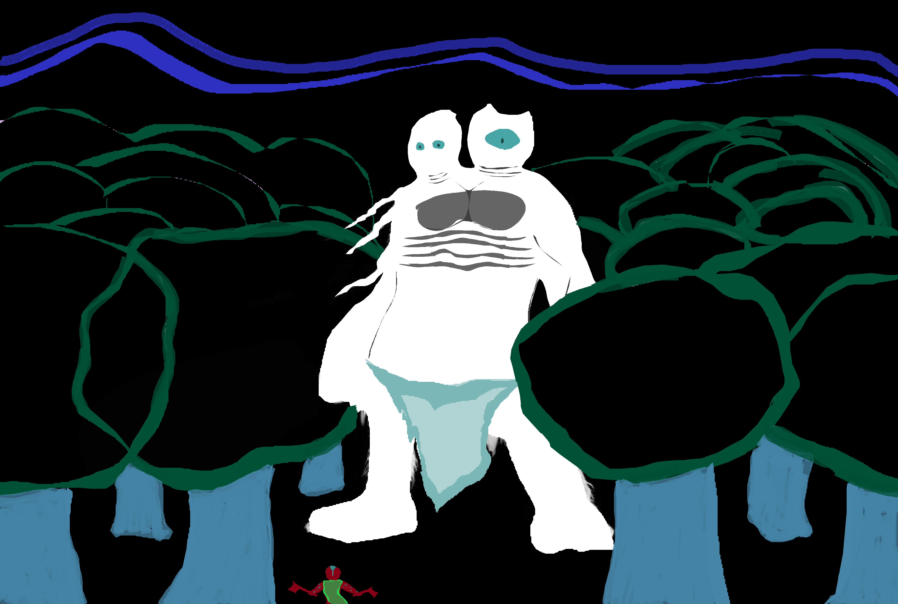
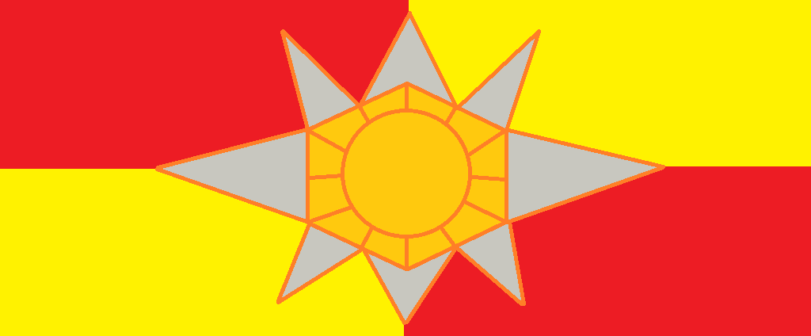
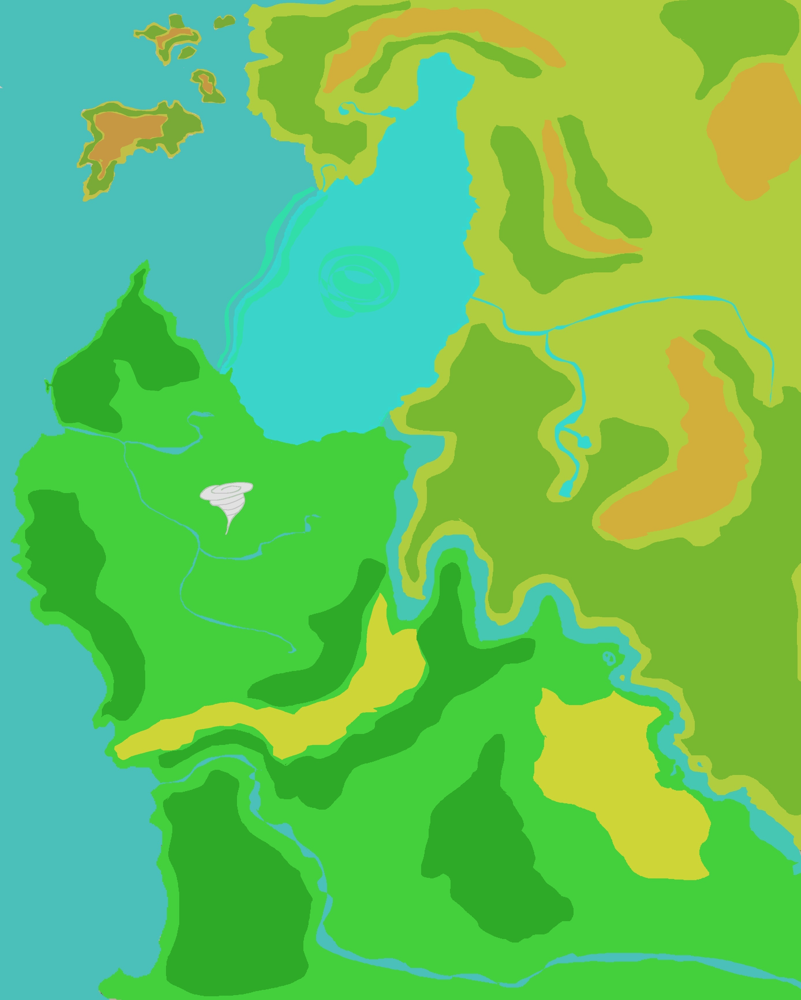
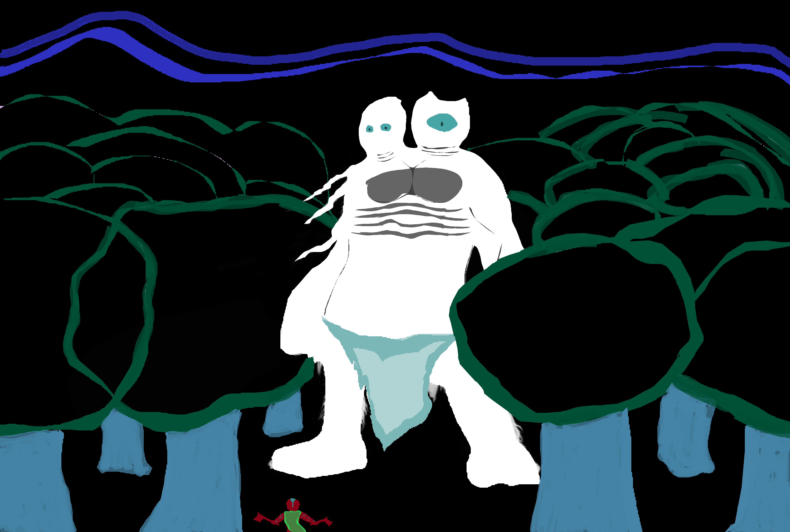
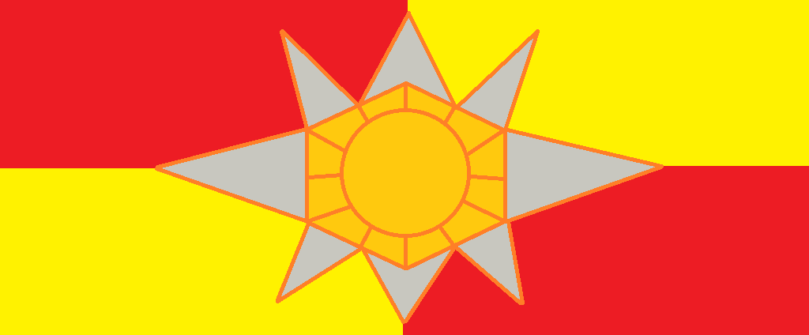

D&D Geroca Campaign
Index | Members | BackgroundBackground History
Penra.. so far
My world encompasses a mixing pot of fantasy races thrown together by a mythos of ancient conflicts and colamities started by started by races that still exist in a declining state.
Ancient Penra
The ancient status quo pertained between Dragon and Giant-kind, the prime races of Penra, who ruled over the 'lesser races' and ran their own mighty empires.
A major event in Penra's history was the total collapse of the realm Evergreen, home of the Fey, split by its ruling Elven Empire Magical Civil War that resulted in magical tares between the Marial Realm and the Evergreen.
Being the world where the naturalistic energies of universe come from, these tares had rapturous consequences on the Material Realm, taring some continents asunder, enhancing the ferociousness of its inhabitance's biology, and corrupting the natural cycle of nature.
For this misdeed, the Fey banished Elven-kind from the Evergreen, made worst off when brought under the dominion of the Dragonic Empire.
In the years without wars to rage, the Dragons experimented with their slaves and produced half breeds to serve in their armies.
But no period of time is ever truely peaceful. Amiss this tranqual time, man and dwarf warred as proxies for Giant-kind against the Elves and Dragonborn of the Dragons.
How the great conflict eventually arose remains a mystery, though the powerkeg to such a war was inevitable to spark.
Eventually these mighty empires were brought low in their war, and were brought to near exinction when their unified slaves rose up, fortified by astral powers of foreign gods.
Devistated, the giants lost their kingdom and the many dragon flights were forced into hiding.
Since then, the state of Penra's fate has been left in the hands of morals.
The Age of the Great Cataclysm
A period of time that spanded 200 years when the legions of the 9 Hells gained foothold over gateways to the Material Plane and invaded Penra.
The skys rained fire as hordes of demons materialized into the world to slaughter and enslave Penra's denisons, building fouder for their master's soul machine.
Caught unprepared, the warring mortal races discovered to their horror that their undefended homelands were being razed while they were months out.
Despite to save their civilizations, these mortals pressed for peace in their wars of conquest and banded together to fight the demonic menace.
This is where the Triple Pact was formed between Penra's most powerful kingdoms of the Dwarven Clans, Elven Enclaves, and the Human provances.
For two centuries races of Penra waged a gritty but ultimately successful holy campaign that ultimately culiminated in the destruction the temples and places of power that brought the demons through.
The war offically ended at the Battle of Cyndor, where a band of powerful mortals killed the Belor guarding the final gate to the 9 Hells and invoking powerful magic to break its connection to the Material Plane.
This significant moment in Penra's history established the year 0 of the Teshioran calendar known as 0 SBC (Since the Battle of Cyndor).

Teshiora

A flatland region domainated by city state duchies primarily controlled by the seven ruling Human Clans established around 1100 SBC.
Rekyva: The Valley of Monsters

The duchy of Rekyva is nestled in the hilliest part of Teshiora's northlands along the Latvia River with the capital of Rekyva built as a hilltop fortress.
The provance surrounding Rekyva was the home to several hill tribes of humans around 450 SBC, growing into an feudal power over the course of several centuries as rule of powerful warlords united the tribes into the Ruskian people.
In the ancient Rekyvan language, known as Ruskle, Rekyva means (Rek) Warrior's (yva) Cradle, which is resembled in their militaristic mindset, fielding the largest army of the seven duchies.
Ruskians value valor and stoicism in the face of danger, exemplifying a culture perceived to be constantly at war with its neighbors, forging some of the most tenacious and stubborn men of Teshiora.
Prone to expansionist tendencies, the twin ruling Warlords project the persistent image to their people that they are foreigners to these lands surrounded by enemies and must always be ready for war.
Often times the Ruskians go to war to ironically stave off hostilities from powerful neighbors, using occupied duchies like Lithia as a buffer state from southern aggression.

Born in a land frought with danger, Rekyvans form strong familial bonds with their neighbors known as clansmen and hold the position of REKK-VAR (Brave Warrior) as the highest honor a non-noble can be.
Lithia: The Land of Rain and Storm

The duchy of Lithia is centrally located in-between two major trade rivers and a plentitude of flat land for agriculture to flourish where the capital of Lithia being a twin port city.
Formed by Elven decent, Lithia means (Lith) Rain (ia) Land, showcased in intense bimonthly rain seasons resulting in numerous rainstorms and floods, controlled only by the peoples deep druidic and religious ties to nature.
Bonded in the Triple Pact, these Elves inhabit Human lands under the guidance of a council of Human elders of Clan Zoric, for no other duchy would accept them.

Co-habitation among races led Lithia containing the highest population of Half Elves in Teshiora, while also fostering the first and largest mixing pot of Humans and Elves in the known world.
Recently in world history, the Ruskian Warlord Grim Holska led an army of over 14,000 to occupy the unmilitarized Lithia after a Half Elf assassin made an attempt on his life.
Without the power to defend their homes, many Lithians have fled south into the ancient forests of Capidea where they setup hidden camps under the hospitality of Capidean Forest Elves.
Clan Holska now occupies Lithia, repressing any resemblance of the old Elven religion and restricting freedom of movement throughout the duchy.
The people of Lithia are now refugees; harboring ill will towards neighboring kingdoms who stood by as their home was taken over, pushing some of the Circle's druids to follow radical leadership to reclaim their homeland.
Pieterues: The Capital of the Teshioran Empire

The grassland city state of Pieterues is the hegemony of the Teshioran League, under the rule of King Daravan, proclaimed King of the Humans.
Founded along the Great Arrow Lake, the foundation myth of Pieterues was formed around the Age of Cataclysm, during which a band of villages from western tribes came across and hide in an unremarkable abandoned town of no name.
Following a bid of despiration, the villagers followed the superstition of crazied village elder who commanded them to coat the hideaways and their families in red to avoid sight of the invading demonic hordes.
Those who faifully followed the old man's commands evaded the notice of an invading demonic hoard, who went on to slaughter the uncoated villagers and level the countryside.
For 8 days the villagers remained hidden in the village until a messsager was spotted outside, telling the survivors that demons had been driven off by brave defenders of the land.
In light of the villager's blessed survival, they named the village Pieterues (Little Red Stone) and declared the mad elder as their prophet.
With many of their neighboring tribes devastated by the Cataclysm, the Piertians were given chance to expand for centuries into a dominate force of the region, able to finally compete with its rivaling neighbors.
The village became a town and placed their wisest elders as ruling lords, guided by clergy of a newly forming religion called Pekyo (Eternal Stone) which worshiped aspects of strong family bonds, the strength to protect them, and the honoring of heroic sacrifice.
As generations grew up with their founding myth taught, their survival was interpreted as a sign of fate, prompting religion became an important part of Piertians lives, leading to many advisors to the King being among the clergy.
The King themselves was chosen by hereditary ties to the city's founders, maintaining power primarily those appeasement of the Arch Clerics and the formation of world renown army, known for their fanatical loyalty and dedication.
Those Kings that failed to appease the Order of Pekyo tended to be placed in positions were their family was excommunicated from the church and had to commit to typically suicidal act of heroism to restore their honor.
Throughout the history of Teshiora, Kings of Pieterues inducted neighboring city states into the Teshioran League through military force, but mainly remaining loyal as long as Pieterues defends the realm from outside forces.
Such outside forces include the barbarian tribes to the north, the Centaur leagues to the east, and feared prophetic return of the demons hordes.
Saldus: The Pious State

The fortified duchy of Saldus is located along the Capidean River, surrounded by high walls that establish itself as the gateway into Teshiora.
Its founding was in the Age of Cataclysm when an armed militia of 49 clerics of Pelor defending their village against persistent hordes of demons that otherwise ravaged the land.
The truth of this origin myth is yet to be proven, though the city state that arose centuries later took up the name "Saviors (Sal) of the Light (dus)" following this myth and is home to one of the most powerful orders of Pelor in the known world, The Sian (God's gracious) Convenient.
Saldus rests on a hilltop near where the Capidean River is the easiest to cross, and surrounds itself in high stone walls along the river's bank to defend against the southern threats of centaur hordes and lizardmen.
The city is segmented to several quadrants corresponding to the different sects of Pelor, with the militant sect garnering the most prestige, and ultimately political power, in the city. Those who live here do so to feel closer to the city's patron deity Pelor, through a mixing pot of religious and cultural means.
Outside the duchy of Lithia, Saldus is one of the most multicultural city states in the world, featuring a prominent gathering of Elves, Dwarfs, Gnomes, and even monstrous races like Kobolds, Goblinoids, and Orcs as long as they share the city's governing tenants.
This theocratic city state enjoys a reserved spiritual life filled with communal prayer, the singing of hymns, and the distribution of alms. Pelorians strive to perform so many good acts that evil has no room in which to exist, however this dogmatic mindset has led to Pelor's followers to be wary of outsiders who don't share their commitment.
Thus, many Pelorians are wary outside practices, repressing all forms of summoning magic, dark incantations, and necromantic magic, fearing these practices will weaken their connection to Pelor and will led to another demonic invasion.
As part of the Teshioran League, Saldus serves as the southern pass into the region, guarded by the city's clerical knight class known as Peltorians who uphold their order's tenants while holding the martial prowess of a birth trained warrior.
It's common for other duchies to have a peltorian amongst their advisory council to speak on behalf of Saldus and offer religious advice on matters of planer significance. Some would consider them the best and the worst diplomats due to their dogma dictating that they speak on behalf of Pelor, therefore act in foreign lands almost as though they themselves govern it.
Despite this, the Kings of Pieterues have gone to great lengths to appeal to pelorian customs because their significant divine fighting force also serves to protect his realm from the Rekyvans, who often are often unwilling to speak with Saldian sent diplomats.
Penra.. so far
My world encompasses a mixing pot of fantasy races thrown together by a mythos of ancient conflicts and colamities started by started by races that still exist in a declining state.
Ancient Penra
The ancient status quo pertained between Dragon and Giant-kind, the prime races of Penra, who ruled over the 'lesser races' and ran their own mighty empires.
A major event in Penra's history was the total collapse of the realm Evergreen, home of the Fey, split by its ruling Elven Empire Magical Civil War that resulted in magical tares between the Marial Realm and the Evergreen.
Being the world where the naturalistic energies of universe come from, these tares had rapturous consequences on the Material Realm, taring some continents asunder, enhancing the ferociousness of its inhabitance's biology, and corrupting the natural cycle of nature.
For this misdeed, the Fey banished Elven-kind from the Evergreen, made worst off when brought under the dominion of the Dragonic Empire.
In the years without wars to rage, the Dragons experimented with their slaves and produced half breeds to serve in their armies.
But no period of time is ever truely peaceful. Amiss this tranqual time, man and dwarf warred as proxies for Giant-kind against the Elves and Dragonborn of the Dragons.
How the great conflict eventually arose remains a mystery, though the powerkeg to such a war was inevitable to spark.
Eventually these mighty empires were brought low in their war, and were brought to near exinction when their unified slaves rose up, fortified by astral powers of foreign gods.
Devistated, the giants lost their kingdom and the many dragon flights were forced into hiding.
Since then, the state of Penra's fate has been left in the hands of morals.
The Age of the Great Cataclysm
A period of time that spanded 200 years when the legions of the 9 Hells gained foothold over gateways to the Material Plane and invaded Penra. The skys rained fire as hordes of demons materialized into the world to slaughter and enslave Penra's denisons, building fouder for their master's soul machine. Caught unprepared, the warring mortal races discovered to their horror that their undefended homelands were being razed while they were months out. Despite to save their civilizations, these mortals pressed for peace in their wars of conquest and banded together to fight the demonic menace. This is where the Triple Pact was formed between Penra's most powerful kingdoms of the Dwarven Clans, Elven Enclaves, and the Human provances.
For two centuries races of Penra waged a gritty but ultimately successful holy campaign that ultimately culiminated in the destruction the temples and places of power that brought the demons through. The war offically ended at the Battle of Cyndor, where a band of powerful mortals killed the Belor guarding the final gate to the 9 Hells and invoking powerful magic to break its connection to the Material Plane. This significant moment in Penra's history established the year 0 of the Teshioran calendar known as 0 SBC (Since the Battle of Cyndor).
Teshiora
A flatland region domainated by city state duchies primarily controlled by the seven ruling Human Clans established around 1100 SBC.
Rekyva: The Valley of Monsters
The duchy of Rekyva is nestled in the hilliest part of Teshiora's northlands along the Latvia River with the capital of Rekyva built as a hilltop fortress. The provance surrounding Rekyva was the home to several hill tribes of humans around 450 SBC, growing into an feudal power over the course of several centuries as rule of powerful warlords united the tribes into the Ruskian people. In the ancient Rekyvan language, known as Ruskle, Rekyva means (Rek) Warrior's (yva) Cradle, which is resembled in their militaristic mindset, fielding the largest army of the seven duchies. Ruskians value valor and stoicism in the face of danger, exemplifying a culture perceived to be constantly at war with its neighbors, forging some of the most tenacious and stubborn men of Teshiora. Prone to expansionist tendencies, the twin ruling Warlords project the persistent image to their people that they are foreigners to these lands surrounded by enemies and must always be ready for war. Often times the Ruskians go to war to ironically stave off hostilities from powerful neighbors, using occupied duchies like Lithia as a buffer state from southern aggression.
Born in a land frought with danger, Rekyvans form strong familial bonds with their neighbors known as clansmen and hold the position of REKK-VAR (Brave Warrior) as the highest honor a non-noble can be.
Lithia: The Land of Rain and Storm
The duchy of Lithia is centrally located in-between two major trade rivers and a plentitude of flat land for agriculture to flourish where the capital of Lithia being a twin port city. Formed by Elven decent, Lithia means (Lith) Rain (ia) Land, showcased in intense bimonthly rain seasons resulting in numerous rainstorms and floods, controlled only by the peoples deep druidic and religious ties to nature. Bonded in the Triple Pact, these Elves inhabit Human lands under the guidance of a council of Human elders of Clan Zoric, for no other duchy would accept them.
Co-habitation among races led Lithia containing the highest population of Half Elves in Teshiora, while also fostering the first and largest mixing pot of Humans and Elves in the known world. Recently in world history, the Ruskian Warlord Grim Holska led an army of over 14,000 to occupy the unmilitarized Lithia after a Half Elf assassin made an attempt on his life. Without the power to defend their homes, many Lithians have fled south into the ancient forests of Capidea where they setup hidden camps under the hospitality of Capidean Forest Elves. Clan Holska now occupies Lithia, repressing any resemblance of the old Elven religion and restricting freedom of movement throughout the duchy. The people of Lithia are now refugees; harboring ill will towards neighboring kingdoms who stood by as their home was taken over, pushing some of the Circle's druids to follow radical leadership to reclaim their homeland.
Pieterues: The Capital of the Teshioran Empire
The grassland city state of Pieterues is the hegemony of the Teshioran League, under the rule of King Daravan, proclaimed King of the Humans. Founded along the Great Arrow Lake, the foundation myth of Pieterues was formed around the Age of Cataclysm, during which a band of villages from western tribes came across and hide in an unremarkable abandoned town of no name. Following a bid of despiration, the villagers followed the superstition of crazied village elder who commanded them to coat the hideaways and their families in red to avoid sight of the invading demonic hordes. Those who faifully followed the old man's commands evaded the notice of an invading demonic hoard, who went on to slaughter the uncoated villagers and level the countryside. For 8 days the villagers remained hidden in the village until a messsager was spotted outside, telling the survivors that demons had been driven off by brave defenders of the land.
In light of the villager's blessed survival, they named the village Pieterues (Little Red Stone) and declared the mad elder as their prophet. With many of their neighboring tribes devastated by the Cataclysm, the Piertians were given chance to expand for centuries into a dominate force of the region, able to finally compete with its rivaling neighbors. The village became a town and placed their wisest elders as ruling lords, guided by clergy of a newly forming religion called Pekyo (Eternal Stone) which worshiped aspects of strong family bonds, the strength to protect them, and the honoring of heroic sacrifice. As generations grew up with their founding myth taught, their survival was interpreted as a sign of fate, prompting religion became an important part of Piertians lives, leading to many advisors to the King being among the clergy. The King themselves was chosen by hereditary ties to the city's founders, maintaining power primarily those appeasement of the Arch Clerics and the formation of world renown army, known for their fanatical loyalty and dedication.
Those Kings that failed to appease the Order of Pekyo tended to be placed in positions were their family was excommunicated from the church and had to commit to typically suicidal act of heroism to restore their honor.Throughout the history of Teshiora, Kings of Pieterues inducted neighboring city states into the Teshioran League through military force, but mainly remaining loyal as long as Pieterues defends the realm from outside forces. Such outside forces include the barbarian tribes to the north, the Centaur leagues to the east, and feared prophetic return of the demons hordes.
Saldus: The Pious State
The fortified duchy of Saldus is located along the Capidean River, surrounded by high walls that establish itself as the gateway into Teshiora. Its founding was in the Age of Cataclysm when an armed militia of 49 clerics of Pelor defending their village against persistent hordes of demons that otherwise ravaged the land. The truth of this origin myth is yet to be proven, though the city state that arose centuries later took up the name "Saviors (Sal) of the Light (dus)" following this myth and is home to one of the most powerful orders of Pelor in the known world, The Sian (God's gracious) Convenient.
Saldus rests on a hilltop near where the Capidean River is the easiest to cross, and surrounds itself in high stone walls along the river's bank to defend against the southern threats of centaur hordes and lizardmen. The city is segmented to several quadrants corresponding to the different sects of Pelor, with the militant sect garnering the most prestige, and ultimately political power, in the city. Those who live here do so to feel closer to the city's patron deity Pelor, through a mixing pot of religious and cultural means. Outside the duchy of Lithia, Saldus is one of the most multicultural city states in the world, featuring a prominent gathering of Elves, Dwarfs, Gnomes, and even monstrous races like Kobolds, Goblinoids, and Orcs as long as they share the city's governing tenants. This theocratic city state enjoys a reserved spiritual life filled with communal prayer, the singing of hymns, and the distribution of alms. Pelorians strive to perform so many good acts that evil has no room in which to exist, however this dogmatic mindset has led to Pelor's followers to be wary of outsiders who don't share their commitment. Thus, many Pelorians are wary outside practices, repressing all forms of summoning magic, dark incantations, and necromantic magic, fearing these practices will weaken their connection to Pelor and will led to another demonic invasion.
As part of the Teshioran League, Saldus serves as the southern pass into the region, guarded by the city's clerical knight class known as Peltorians who uphold their order's tenants while holding the martial prowess of a birth trained warrior. It's common for other duchies to have a peltorian amongst their advisory council to speak on behalf of Saldus and offer religious advice on matters of planer significance. Some would consider them the best and the worst diplomats due to their dogma dictating that they speak on behalf of Pelor, therefore act in foreign lands almost as though they themselves govern it. Despite this, the Kings of Pieterues have gone to great lengths to appeal to pelorian customs because their significant divine fighting force also serves to protect his realm from the Rekyvans, who often are often unwilling to speak with Saldian sent diplomats.